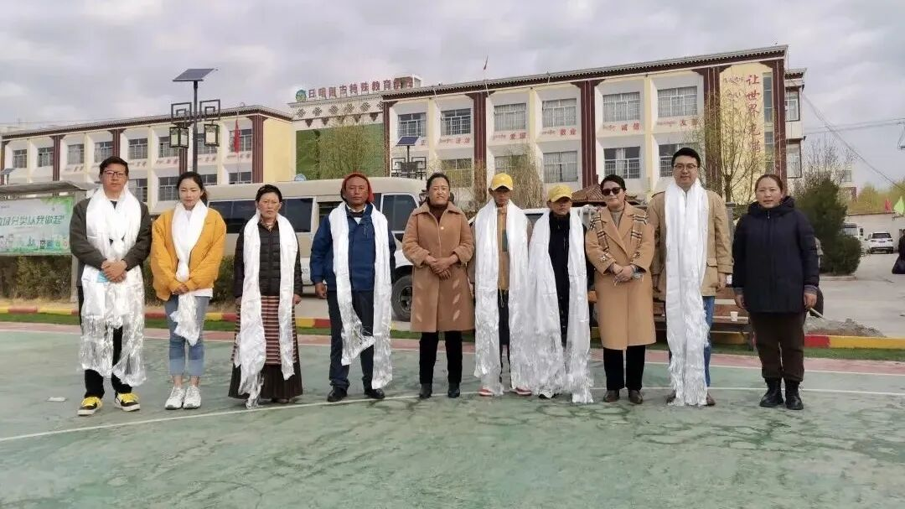
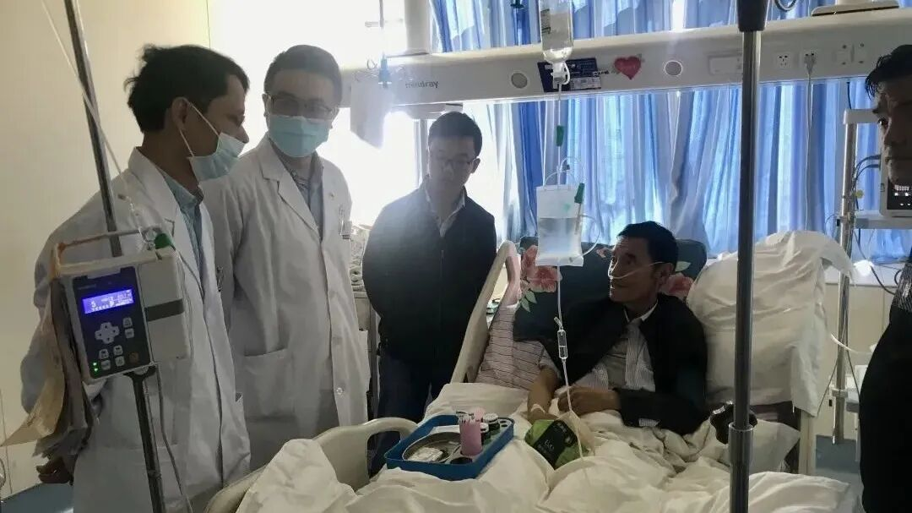
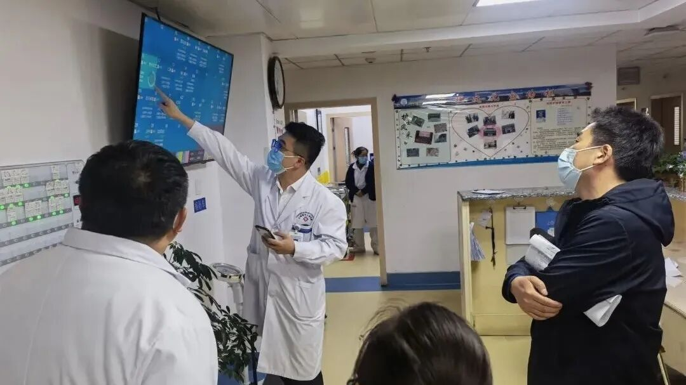

从黄浦江到日喀则：电波特别企划 EP2——带去的，不只是技术
导语
上一期节目，我们从六安医生郑权的经历出发，听见一项来自上海的技术如何在基层被接住、被实践，并逐渐成为当地医疗能力的一部分。
但一项改变能够真正发生，也离不开另一端的奔赴。2019年，乐飞老师作为上海市第九批援藏干部前往西藏日喀则，开展为期三年的对口支援工作。三年间，他走上高原的手术台，也参与当地医院的管理、教学与人才培养。
从黄浦江到日喀则，技术如何在新的医疗环境中落地？援藏结束后，真正留下来的又是什么？
本期节目，让我们跟随乐飞老师的讲述，回到那段高原岁月，理解一项改变究竟如何才能真正留下来。
资料卡片

乐飞，医学博士，上海交通大学医学院党政办公室副主任，附属瑞金医院普外科主任医师。2019年7月，作为上海市第九批援藏干部赴西藏日喀则开展为期三年的对口支援工作，任日喀则市人民医院副院长。主持国家自然科学基金等多项课题，发表学术论文57篇，获授权专利6项；曾获上海市五一劳动奖章、全国高校青年教师教学竞赛二等奖、上海交通大学“凯原十佳”教师等荣誉。
点击下方收听播客音频
音频暂未加载，请稍后重试，或前往公众号收听。
跨越山海，先成为 “这里的人”

Q
主持人：乐飞老师您好，请您跟听众朋友做一个简单的自我介绍。
A
乐飞老师：我从上海交通大学医学院毕业后，一直在瑞金医院从事普外科临床工作。2019 年，我作为上海市第九批援藏干部，前往西藏日喀则，担任日喀则市人民医院党委委员、副院长，开展了为期三年的对口支援工作。
Q
主持人：接到三年援藏任务的时候，您内心更多是担心，还是期待？真正踏上日喀则这片高原，带给您最直接的冲击是什么？
A
乐飞老师：刚接到任务时，其实兴奋是大于担心的。我一直想去西藏，只是没想到第一次去，就要在那里工作三年。出发前，我们了解过高原反应、缺氧和冬季严寒，心里也免不了担忧。
2019年7月，我们一行24人奔赴高原。飞机落地后，每个人都拿出了随身携带的血氧仪，我测到自己的血氧饱和度只有65%。作为临床医生，我们很清楚这个数字意味着什么。平时在病房看到患者血氧降到88、89，就会高度紧张。当时我身旁正好是仁济医院的麻醉科同行，我转过去问他：“你看到这个数字，是不是有一种想给我插管的冲动？”大家只能用玩笑来缓解心里的担忧，也开始认真思考，身体能不能扛住这三年的考验。
Q
主持人：整个医疗队都顺利适应高原环境了吗？在日喀则的生活中，有没有哪段经历让您对当地患者和高原工作有了全新的认识？
A
乐飞老师：大部分队员在两周左右逐渐适应了高原环境，但我们也失去了一位战友——来自上海交通大学医学院附属儿童医院的心内科医生赵坚。这件事给整个团队带来了很大冲击，但大家仍然稳住阵脚、坚守岗位，继续完成援藏工作。
以前在上海值班时，遇到不愿吸氧的患者，我曾半开玩笑地说：“这么便宜的氧气给你吸，你还不要，我想吸都吸不到。”可到了日喀则，我自己夜晚也要戴着鼻导管吸氧。西藏气候极度干燥，早晨醒来时鼻腔里都是干硬的血痂；夜里鼻导管不断送氧，又干又疼，很难安睡。我这才真切体会到，吸氧并不是一件舒服的事情。
从那以后，我再也不会说出那样的话。回到上海后的几个月里，夜间惊醒时，我还会下意识伸手寻找氧气管，过后才反应过来，自己已经回到了平原。
一台手术，如何改变一种观念

Q
主持人：上一期节目中，郑权医生提到，赴沪进修改变了他的思维方式。您在援藏过程中是否也感受到，真正需要带去的不只是技术？
A
乐飞老师：技术帮扶只是一方面，更重要的是通过管理的方式，把先进的理念带到当地，留在当地。
2019年，我们在日喀则开展工作时，当地有大量阑尾手术采用开放手术，而上海的腔镜手术率已经接近100%。当地医生觉得开放手术已经做得很好，腔镜反而麻烦，可能还会延长手术时间。
这一批医疗队24个人中，正好有3位普外科医生。我们通过实际手术和现场示范，引导当地医生慢慢转变观念。原来他们以为腔镜手术要做两个小时，但我们实际操作时，20分钟左右就可以完成。三年工作结束时，当地阑尾手术的腔镜率达到100%，患者的创伤和住院时间也明显减少。
Q
主持人：您从日喀则带回上海的又是什么？这三年的经历有没有影响您后来的工作方式？
A
乐飞老师：在日喀则担任副院长后，我开始接触科研教学、信息化、援藏项目和绩效改革等原本并不熟悉的工作。这让我意识到，职业生涯中总会遇到新的领域。回到上海后，我面对陌生工作的畏难情绪少了，反而会想：“很好，又可以学习新知识了。”这段经历让我逐渐形成了一种“空杯心态”。
真正留下来的，是能够独当一面的医生

Q
主持人：一项技术从上海带到基层，并不是把设备运过去就结束了。它还需要有人操作、有人维护，也要真正进入日常诊疗过程。您觉得，一项技术或理念要想在基层留下来，最关键的因素是什么？
A
乐飞老师：我觉得最关键的因素还是人。
日喀则地区大约有80万人口，面积却是上海的30倍，人口密度约为上海的千分之一。当地医生不是不努力，而是受人口和病例量限制，很多手术缺少足够的训练机会。
所以，我们推动当地青年骨干到上海对应的医院进修。只懂理论是不够的，真正完成一台手术，和成长为能够独立开展这项手术的专家，并不是一回事。当地医生到上海之后，一个星期接触到的手术量，有时可能超过他们过去一年的手术量；
与此同时，上海专家也持续前往日喀则开展帮扶。目前，上海交通大学医学院附属第六人民医院和第九人民医院的骨科团队，已经在日喀则常态化开展机器人辅助关节手术，一年援藏期间的目标是完成100例以上。
Q
主持人：从您的经验来看，一场帮扶怎样才能真正从“输血”走向“造血”？
A
郑权老师：援藏工作中，我们一直记着一句话：功成不必在我，功成必定有我。
上海对口支援西藏从1995年开始，已经持续了30多年。从早期改变管理模式、转变思想观念，到2017年开始开展组团式医疗援藏和教育援藏，这其实是一棒接一棒的过程。
援藏不能只盯着单个专业，还要形成团队协作。面对多发复合伤时，需要泌尿外科、妇产科、普外科、麻醉科和ICU共同配合。上海专家不仅要展示专业技术，也要帮助当地医生形成团队作战、协同作战的工作方式。
这些年，当地很多骨干逐渐成长为科主任、西藏自治区相关学会的副主委，甚至进入中华医学会外科学分会青年学组。他们从过去难以想象自己能够走上学术平台，到后来能够主持会议、讲课，再到开始培养自己的学生。
后来我们再次回到西藏，他们仍然客气地称我们为“老师”，但我们一直把彼此当作同事。看到他们一点点成长为当地的骨干，又开始带自己的徒弟，才能真正感受到这种“润物细无声”的力量。
把医学讲成学生愿意听下去的故事
Q
主持人：您在课堂上会从历史中寻找素材，结合词源和多语言材料解释医学术语，学生还给您起了一个很特别的称呼——“Happy哥”。您是怎样形成这样的教学风格的？
A
乐飞老师：大学课堂不能只是把课本放到PPT上再读一遍。学生的自学能力很强，老师需要思考的是，他们真正想听什么，为什么会走神。我会用历史典故、词源和课外素材调整课堂节奏，也欢迎学生随时提出疑问和不同观点。
课没讲好，不一定是知识点没有讲到，也可能是呈现方式出了问题。我们更不能把学生培养成“冷漠的手术机器”或“病例书写机器人”。一个医生即使技术很好，却不能理解患者，也可能只是一个“开刀匠”。
后来，有学生毕业成为医生后，还会继续讲我课上的故事。有一次，一位已经成为副主任医师的学生对我说：“乐老师，我以前是听着您的课长大的。”那一刻我觉得，自己尝试的这些教学方法是值得的。教育最大的目的是能够传承。
Q
主持人：在您看来，医学人文在医生培养中处于什么位置？医生除了提供技术支持，还应该为患者提供什么？
A
乐飞老师：医生不仅要提供专业支持，也要给予患者心理上的支撑。我曾接诊过一位肠癌广泛转移、肝和肺都有转移的患者，当时预计他的生存期可能只有两年，但他求生欲很强。现在四年半过去了，状态依然很好。
医生在提供专业支持的同时，也应该通过医学人文，让患者重新燃起对生活的希望。一句话可以把人说得笑起来，也可以把人说得跳起来。
如果只强调技术和所谓“实话”，却忽略患者作为一个人的情感需求，就还没有真正做到以患者为中心。
Q
主持人：除了临床和教学，您也长期从事医学科普。是什么契机让您开始做科普？在自媒体快速发展的今天，您如何看待医生进行医学科普的意义？
A
乐飞老师：2015年，我参加“健康演说家”活动。一位记者听完关于肠癌防治的演讲后，发现自己也有相关表现，随后及时检查并接受了手术。后来，他带着刚参加完高考的孩子到西藏旅游，还专程绕道日喀则来看我。
这件事让我意识到，与其坐在诊室里等患者来，不如通过科普把健康知识送到更早的阶段。
对于当前的医学自媒体，我持审慎乐观的态度。医学科普需要专业训练、自我约束和伦理意识，尤其要避免绝对化表达。如果医生和医学生不主动参与，错误甚至虚假的声音就可能占据健康传播阵地。
Q
主持人：作为一位学长，您有什么想对刚刚进入医学道路的同学说的吗？
A
乐飞老师：等到了主任医师阶段，临床工作中仍然会用到教材里的知识。教材中有临床工作里绝大多数疾病的基本答案和处理方式，所以夯实基本功非常重要。像组胚、病生这些学科，到了副高甚至正高阶段，我还会回过头去重新学习。
医学能够带来一种其他职业不一定能够提供的人生价值。医生能够体验到和死神较量、把患者抢救回来的快乐，这种价值是医学职业非常独特的地方。
面对现在社会上的一些变化，只要我们对医学有热爱，就应该对这条道路保持信心。现在学到的每一项知识，未来都会在临床工作中发挥作用。
结语
从黄浦江到日喀则，乐飞老师带去的是技术、理念和协作方式，带回的是对基层医疗和患者处境更切身的理解。
援藏是一场一棒接一棒的接力。当当地医生能够独立开展工作，并开始培养自己的学生，改变才真正留下来，帮扶也由“输血”走向了“造血”。
这里是《从黄浦江到日喀则：电波特别企划 EP2》，我们下期再见。
关于博医
上海交通大学医学院“荣昶-博医”卓越医学生培养计划是上海交通大学医学院在上海荣昶公益基金会的支持下决定开展，具体由共青团上海交通大学医学院委员会组织实施的培养计划。该计划以践行有灵魂的卓越医学创新人才培养为理念，发挥上海交通大学医学院在医学教育及医疗卫生服务领域的综合优势，聚焦面向未来的卫生健康领导力，培养具有人文素养、创新思维、家国情怀、领袖气质、全球视野的高层次“医+X”卓越医学创新人才，担负起健康中国建设使命。
文案丨博医计划五期学员 25级临八 熊睿帆
排版丨博医计划五期学员 25级临八 闫一好